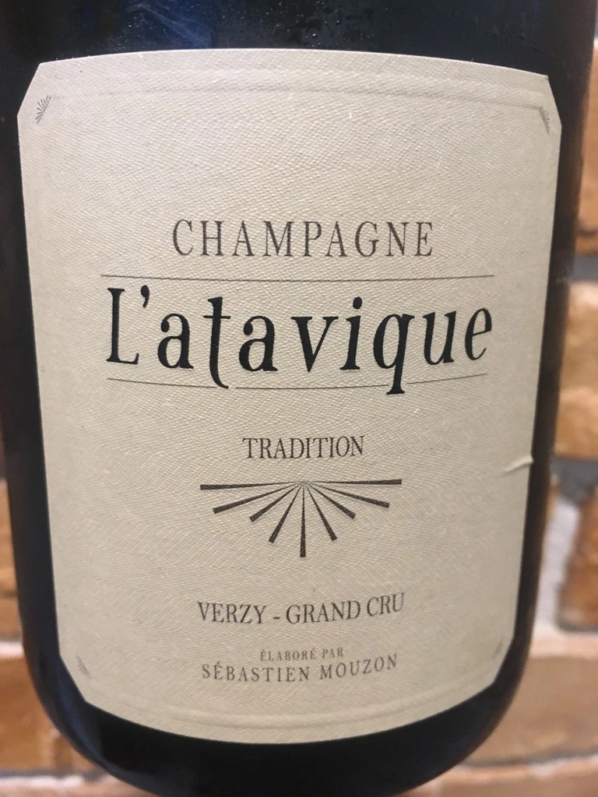
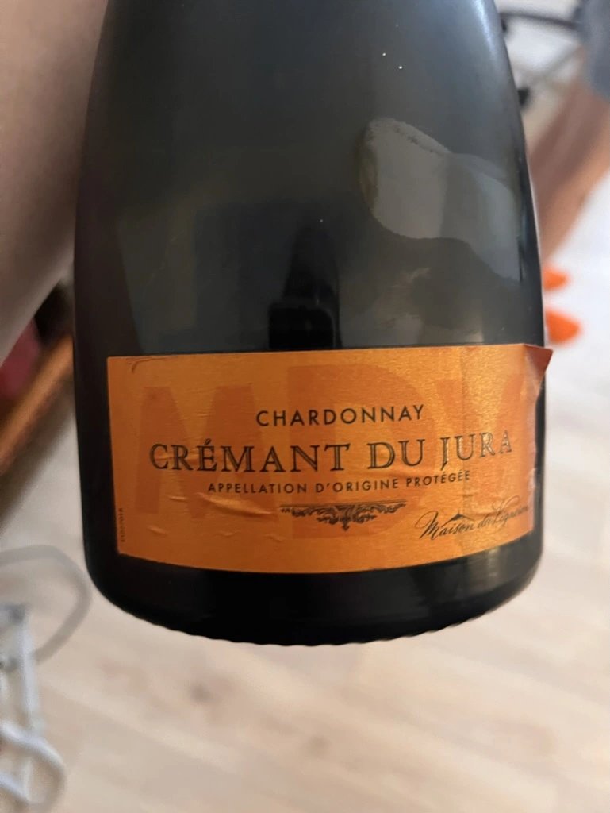
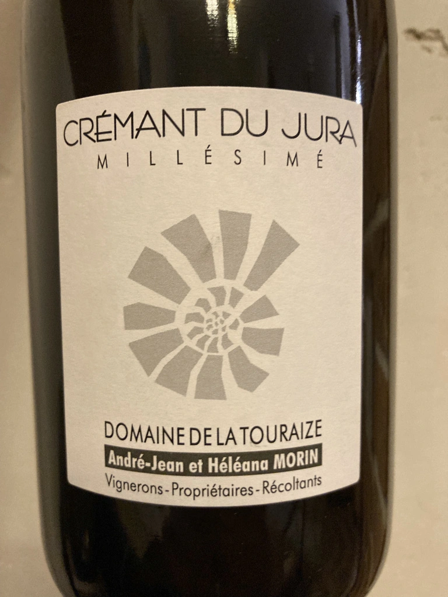
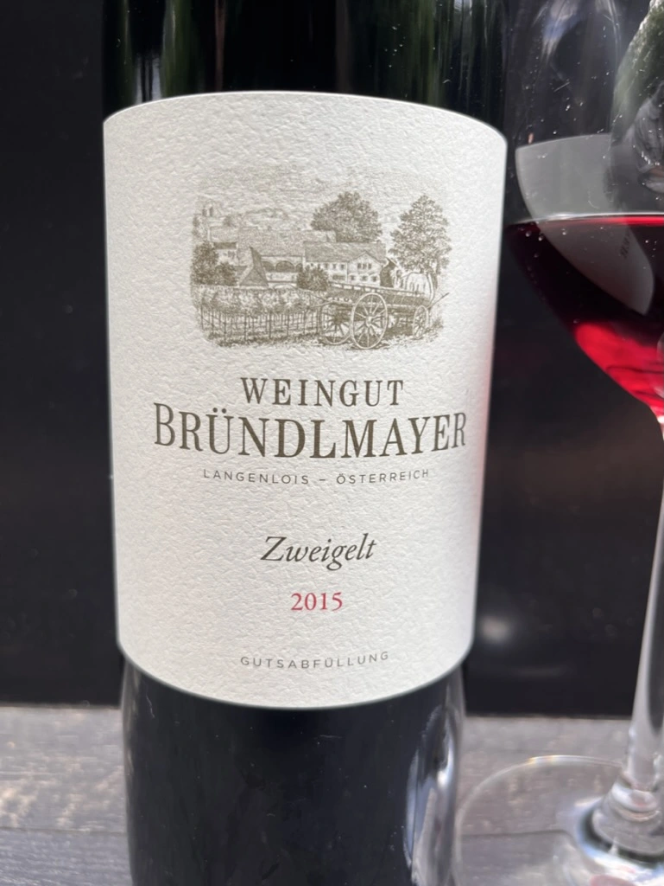

- Type
- White Sparkling, Brut
- Producer
- Pierre Frick
- Vintage
- 2018
- Location
- France, Crémant d’Alsace AOC
- Grapes
- Auxerrois blanc
- Alcohol
- 13
- Sugar
- NA
- Price
- 910 UAH
- Cellar
- N/A
Ratings
2022-06-15 - 8.00
Low intervention bubbles with no chaptalisation and no correction. Powerful oxidative style that explodes with honey, wax, baked apples, almond and pickles. Such a bright style leaves no room to stay indifferent, it’s a love or hate story. And while I like oxidative bubbles, this one lacks complexity and delicacy, I wonder if time will tame its raw vigor.
Oh, and it’s also my first Auxerrois. Happy me.
Related





